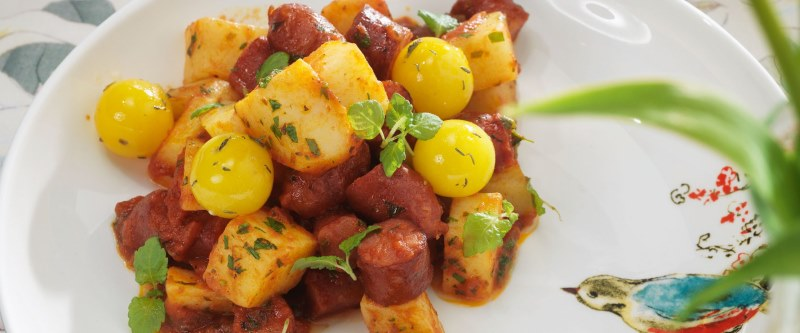

Салат с охотничьими колбасками

1 красную луковицу нарезать тонкими колечками, залить 4 ст.л. уксуса, оставить на полчаса. 4 картофелины сварить в кожуре, дать остыть, нарезать средними дольками. Порезать 2 маринованных огурца и укроп. 4-5 охотничьих колбасок нарезать тонкими кружочками, слегка обжарить вместе с луком. Смешать все одной чаше. Отдельно соединить 1 ст. бальзамического уксуса, 4 ст.л. оливкового масла и черный перец – тщательно размешать. Полить заправкой нарезанные продукты и перемешать. Подавать теплым.